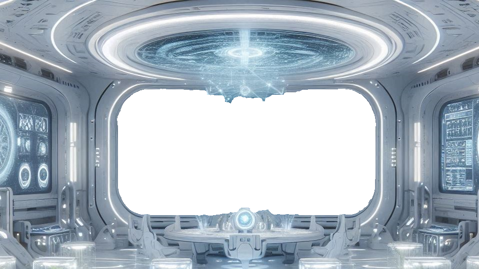

<iframe src='1D2DXX.html' border=0 frameborder=0  style='height:80%;width:80%;position:fixed;top:10%;left:10%;opcity:1'>
</iframe>




<script>

function nulls(){
d=new Date();
if((d.getSeconds()%3)==0){
document.getElementById('alien').style.display='';
}
else{
document.getElementById('alien').style.display='none';

}
setTimeout("nulls()", 1000);
}
nulls();
</script>

